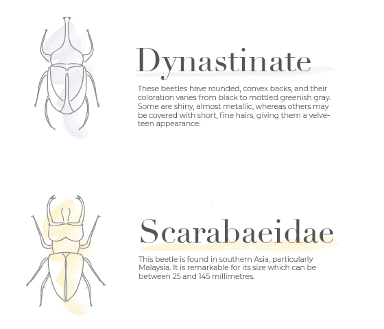

I wanted to recreate a memory from my childhood but render it in a geometric style. This was my first time experimenting with low-poly art, but be on the lookout for more in the future!
Poster for a design tour I helped host during my internship at IQVIA. 
Beetle poster